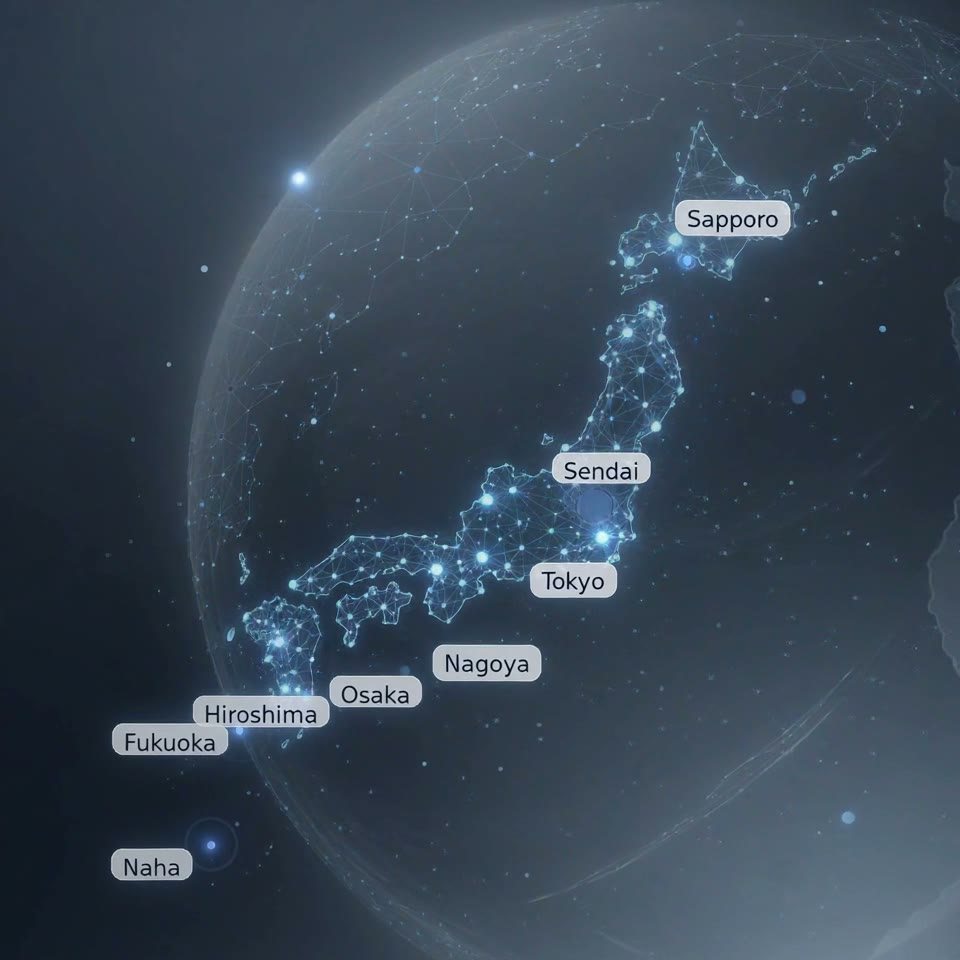

Thinkers GK helps foreign companies in Japan deploy, support, track, retrieve, wipe, and retire company devices without losing operational control. Clear English and Japanese communication. Onsite field support. ITAD with documented data destruction and chain-of-custody when needed. Microsoft 365 / Intune and security cleanup when the operating layer needs tightening. One accountable partner.
If any of these situations sounds familiar, we can usually scope a practical next step quickly — without turning the first conversation into a long consulting exercise.
We help scope connectivity, devices, onsite coordination, vendor handoffs, and closeout documentation so the move does not become an IT fire drill.
This is a strong fit when lifecycle work has to stay documented, defensible, and easy to explain back to headquarters or procurement.
We bridge English reporting and Japanese on-the-ground execution so tickets, projects, and escalations stop getting lost between teams.
We support practical remediation, documented handling, access cleanup, and evidence-oriented reporting for teams that need safer operations in Japan.
AI-assisted intake + senior review. We translate business intent into clear operational scope in both English and Japanese.
Tokyo-based coordination with vetted regional teams across Japan. We stay accountable while the work gets done on the ground.
Chain-of-custody, destruction certificates, and executive reporting so your Japan operations stay compliant and auditable.
Your HQ expects English updates. Your Tokyo office needs Japanese-speaking IT support. We bridge both — one partner, no translation lag.
Procuring hardware across Japan, Singapore, Hong Kong, or Australia? We source, coordinate, deliver and document across the region — monitors, thin clients, peripherals.
End-of-life equipment needs compliant, auditable disposal. We provide documented data destruction, chain-of-custody records, and the closeout certificates global teams usually need.
We respond within 4 business hours. English and Japanese.
Endpoint rollout, asset records, retrieval, wiping, ITAD documentation, and supplier coordination when needed across Japan and APAC.
Learn more →Day-to-day support, remote troubleshooting, account handling, and onsite follow-through when local action is needed.
Learn more →Deployments, swaps, installs, surveys, and coordinated work on the ground.
Learn more →Microsoft 365 administration, endpoint compliance cleanup, access review, Defender coordination, and documented operational hardening.
Learn more →These are the clearest entry points for companies that need practical progress in Japan: urgent endpoint refresh, day-to-day device lifecycle ownership, and Microsoft 365 / Intune cleanup with better control evidence.
A practical path off aging Windows 10 fleets: audit, rollout plan, user migration coordination, onsite swap support, and secure ITAD.
For teams that want one accountable partner for rollout, asset records, retrieval, support, lifecycle reporting, and supplier coordination when needed in Japan.
For teams that need tenant cleanup, endpoint compliance tightening, access review, and clearer security ownership without turning the project into a big-bang redesign.
Companies use Thinkers GK when they want less fragmentation between users, vendors, sites, projects, and reporting. We keep the work moving and the picture clear.
Our team brings together Japanese engineers, bilingual PMs, and operations staff who understand both the technical reality on the ground and the reporting expectations of international HQs.
Why teams choose us →For offices and sites that need a dependable partner in Japan, we coordinate centrally and execute where the work actually happens.

We identify who needs support, which systems matter, what has to happen onsite, and where bilingual coordination removes friction.
Start with scopeWhether it is user support, a site project, vendor coordination, cybersecurity work, or IT asset lifecycle handling, we will help you scope the right next step.